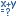

XSJS Debugger
The SAP HANA Web-based Development Workbench provides an integrated debugger, which makes available the tools you need to debug server-side JavaScript code.
The debug tools allow you to perform standard debugging tasks, such as adding breakpoints to the code and starting, stepping through, and resuming code execution. You can also inspect variables and check the validity of expressions.
You set breakpoints in the source code by clicking the line number of the statement you want to stop at. You can set as many breakpoints as you want. A red arrow in the line number column shows each breakpoint that has been set:
Debug mode started:
Simply click the red arrow again to remove the breakpoint.
In the Debugger panel, the Breakpoints pane displays a list of the breakpoints set in the source file you are currently debugging. You can remove breakpoints by deleting them from the list.
To run an application in debug mode, set a breakpoint on the line you want to start
debugging from and then choose  (Run). The debugger stops at the
defined breakpoint and the Debugger panel opens to the right
of the source code.
(Run). The debugger stops at the
defined breakpoint and the Debugger panel opens to the right
of the source code.
A blue arrow inside the red arrow tag shows that a breakpoint has been reached:
|
|
Continues execution to the next breakpoint |
|
|
Steps through the code line-by-line and, whenever a function is called, steps into the body of that function |
|
|
Steps through the code line-by-line but if a function is called it does not step into the body of that function |
|
|
Leaves the current function |
 (
( (
( (
( (
(In the Debugger panel, the Callstack pane shows the line number of the current code line where execution has been suspended. When stepping through the code, the call stack allows you to see the path that is taken when the XS JavaScript file is executed. If a function is called, an entry is added to the top of the call stack and removed when the function has finished. The debugger then continues from the position given at the top of the stack.
The Watch Area pane allows you to inspect the current runtime values of existing variables when execution of the code is suspended at breakpoints or is being stepped through. You can drill down within the tree to view the values of sub-elements.
In the expression evaluation dialog box (open the dialog box by choosing  (Evaluate expression) on the Debugger toolbar), you can write your own statements to check the validity of expressions and manipulate variable values.